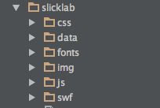
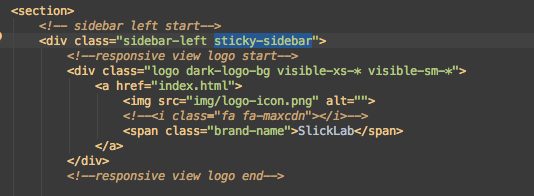
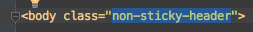
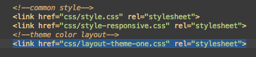
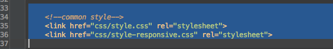
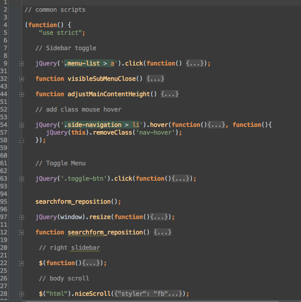
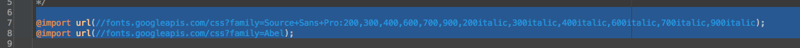

Copyright VectorLab 2015
made with the Documenter v2.0
made with the Documenter v2.0
SlickLab is a Premium Admin Dashboard template with flat design concept. Flat color, clean content placement, easy customization and professional coding is its core power.
SlickLab is a fully responsive admin dashboard template built with Bootstrap 3.3.2 Framework, modern web technology HTML5 and CSS3. It has a huge collection of reusable UI components and integrated with latest jQuery plugins. This theme is very lightweight and easy customizable which is basically designed for the developers who want to customize it with just a finger snap . SlickLab can be used for all type of web applications like custom admin panel, project management system, admin dashboard, application backend, CMS, CRM, business website, corporate, portfolio, blog etc. A large number of widget are included here to make your work easier. SlickLab works on all major web browsers, Desktop, iPhone, iPad, Tablet and all other smart phone device.

<head>
<meta charset="utf-8">
<meta name="viewport" content="width=device-width, initial-scale=1.0, maximum-scale=1.0">
<meta name="author" content="Mosaddek" />
<meta name="keyword" content="slick, flat, dashboard, bootstrap, admin, template, theme, responsive, fluid, retina" />
<meta name="description" content="" />
<link rel="shortcut icon" href="javascript:;" type="image/png">
<title>SlickLab - Responsive Admin Dashboard Template</title>
<!--easy pie chart-->
<link href="js/jquery-easy-pie-chart/jquery.easy-pie-chart.css" rel="stylesheet" type="text/css" media="screen" />
<!--vector maps -->
<link rel="stylesheet" href="js/vector-map/jquery-jvectormap-1.1.1.css">
<!--right slidebar-->
<link href="css/slidebars.css" rel="stylesheet">
<!--switchery-->
<link href="js/switchery/switchery.min.css" rel="stylesheet" type="text/css" media="screen" />
<!--jquery-ui-->
<link href="js/jquery-ui/jquery-ui-1.10.1.custom.min.css" rel="stylesheet" />
<!--iCheck-->
<link href="js/icheck/skins/all.css" rel="stylesheet">
<link href="css/owl.carousel.css" rel="stylesheet">
<!--common style-->
<link href="css/style.css" rel="stylesheet">
<link href="css/style-responsive.css" rel="stylesheet">
<!-- HTML5 shim and Respond.js IE8 support of HTML5 elements and media queries -->
<!--[if lt IE 9]>
<script src="js/html5shiv.js"></script>
<script src="js/respond.min.js"></script>
<![endif]-->
</head>
<section>
<!-- sidebar left start-->
<div class="sidebar-left">
....
</div>
<!-- sidebar left end-->
<!-- body content start-->
<div class="body-content" >
<!-- header section start-->
<div class="header-section">
....
</div>
<!-- header section end-->
<!-- page head start-->
<div class="page-head">
....
</div>
<!-- page head end-->
<!--body wrapper start-->
<div class="wrapper">
....
</div>
<!--body wrapper end-->
<!--footer section start-->
<footer>
....
</footer>
<!--footer section end-->
<!-- Right Slidebar start -->
<div class="sb-slidebar sb-right sb-style-overlay">
<div class="right-bar">
</div>
</div>
</div>
<!-- Right Slidebar end -->
<!-- body content end-->
</section>
<!-- sidebar left start-->
<div class="sidebar-left">
<!--responsive view logo start-->
<div class="logo dark-logo-bg visible-xs-* visible-sm-*">
<a href="index.html">
<img src="img/logo-icon.png" alt="">
<!--<i class="fa fa-maxcdn"></i>-->
<span class="brand-name">SlickLab</span>
</a>
</div>
<!--responsive view logo end-->
<div class="sidebar-left-info">
<!-- visible small devices start-->
<div class=" search-field"> </div>
<!-- visible small devices end-->
<!--sidebar nav start-->
<ul class="nav nav-pills nav-stacked side-navigation">
<li>
<h3 class="navigation-title">Navigation</h3>
</li>
<li class="active"><a href="index.html"><i class="fa fa-home"></i> <span>Dashboard</span></a></li>
<li class="menu-list">
<a href=""><i class="fa fa-laptop"></i> <span>Layouts</span></a>
<ul class="child-list">
<li><a href="boxed-layout.html"> Boxed Page</a></li>
<li><a href="collapsed-menu.html"> Sidebar Collapsed</a></li>
<li><a href="blank-page.html"> Blank page</a></li>
<li><a href="different-theme-layouts.html"> Different Theme Layouts</a></li>
</ul>
</li>
.....
</ul>
<!--sidebar nav end-->
<!--sidebar widget start-->
<div class="sidebar-widget">
<h4>Server Status</h4>
<ul class="list-group">
<li>
<span class="label label-danger pull-right">33%</span>
<p>CPU Used</p>
<div class="progress progress-xs">
<div class="progress-bar progress-bar-danger" style="width: 33%;">
<span class="sr-only">33%</span>
</div>
</div>
</li>
<li>
<span class="label label-warning pull-right">65%</span>
<p>Bandwidth</p>
<div class="progress progress-xs">
<div class="progress-bar progress-bar-warning" style="width: 65%;">
<span class="sr-only">65%</span>
</div>
</div>
</li>
<li><a href="javascript:;" class="btn btn-success btn-sm ">View Details</a></li>
</ul>
</div>
<!--sidebar widget end-->
</div>
</div>
<!-- sidebar left end-->
<!--sidebar nav start-->
<ul class="nav nav-pills nav-stacked side-navigation">
<li>
<h3 class="navigation-title">Navigation</h3>
</li>
<li class="active"><a href="index.html"><i class="fa fa-home"></i> <span>Dashboard</span></a></li>
<li class="menu-list">
<a href=""><i class="fa fa-laptop"></i> <span>Layouts</span></a>
<ul class="child-list">
<li><a href="boxed-layout.html"> Boxed Page</a></li>
<li><a href="collapsed-menu.html"> Sidebar Collapsed</a></li>
<li><a href="blank-page.html"> Blank page</a></li>
<li><a href="different-theme-layouts.html"> Different Theme Layouts</a></li>
</ul>
</li>
.....
</ul>
<!--sidebar nav end-->
Parent Navigation name should be wrap with span and Sub menus should be a class of child-list
To activate Parent Menu have to add class active

To activate Parent Menu with Child Menu have to add class nav-active in the parent list and add class active in the child list

<!-- header section start-->
<div class="header-section">
<!--logo and logo icon start-->
<div class="logo dark-logo-bg hidden-xs hidden-sm">
<a href="index.html">
<img src="img/logo-icon.png" alt="">
<!--<i class="fa fa-maxcdn"></i>-->
<span class="brand-name">SlickLab</span>
</a>
</div>
<div class="icon-logo dark-logo-bg hidden-xs hidden-sm">
<a href="index.html">
<img src="img/logo-icon.png" alt="">
<!--<i class="fa fa-maxcdn"></i>-->
</a>
</div>
<!--logo and logo icon end-->
<!--toggle button start-->
<a class="toggle-btn"><i class="fa fa-outdent"></i></a>
<!--toggle button end-->
<!--mega menu start-->
<div id="navbar-collapse-1" class="navbar-collapse collapse yamm mega-menu">
....
</div>
<!--mega menu end-->
<div class="notification-wrap">
<!--left notification start-->
....
</div>
<!--left notification end-->
<!--right notification start-->
<div class="right-notification">
.....
</div>
<!--right notification end-->
</div>
<!-- header section end-->
<!--footer section start-->
<footer>
2015 © SlickLab by VectorLab.
</footer>
<!--footer section end-->
<!-- Right Slidebar start -->
<div class="sb-slidebar sb-right sb-style-overlay">
<div class="right-bar">
<span class="r-close-btn sb-close"><i class="fa fa-times"></i></span>
<ul class="nav nav-tabs nav-justified-">
....
</ul>
<div class="tab-content">
<div role="tabpanel" class="tab-pane active " id="chat">
....
</div>
<div role="tabpanel" class="tab-pane " id="info">
....
</div>
<div role="tabpanel" class="tab-pane " id="settings">
....
</div>
</div>
</div>
</div>
<!-- Right Slidebar end -->
<!-- Placed js at the end of the document so the pages load faster --> <script src="js/jquery-1.10.2.min.js"></script> <script src="js/jquery-migrate.js"></script> <script src="js/bootstrap.min.js"></script> <script src="js/modernizr.min.js"></script> <!--Nice Scroll--> <script src="js/jquery.nicescroll.js" type="text/javascript"></script> <!--right slidebar--> <script src="js/slidebars.min.js"></script> <!--switchery--> <script src="js/switchery/switchery.min.js"></script> <script src="js/switchery/switchery-init.js"></script> <!--Sparkline Chart--> <script src="js/sparkline/jquery.sparkline.js"></script> <script src="js/sparkline/sparkline-init.js"></script> <!--common scripts for all pages--> <script src="js/scripts.js"></script> </body> </html>
<body class="boxed-view">
<section>
<div class="container">
<!-- sidebar left start-->
<div class="sidebar-left">
...
</div>
<!-- sidebar left end-->
<!-- body content start-->
<div class="body-content" style="min-height: 1100px;">
<!--body wrapper start-->
<div class="wrapper">
body content goes here ..
</div>
<!--body wrapper end-->
<!--footer section start-->
<footer>
2015 © SlickLab by VectorLab.
</footer>
<!--footer section end-->
<!-- Right Slidebar start -->
<div class="sb-slidebar sb-right sb-style-overlay">
...
</div>
<!-- Right Slidebar end -->
</div>
<!-- body content end-->
</div>
</section>
</body>




To change layout theme color add layout-theme css file We've four layout theme css files

but you can add any color whatever you need just choose a layout-theme css file and change the color code only
And add layout-theme css file into html like this

For example we want head background color red then the code will be like this. But always remember if you give any colorfull backgourd class in your header then you must give class name light-color like as follows. Sothat your text color will be light (white)

You can change your logo background color. Just follow the following selected class name. Here we gave red background color which class name is bg-danger . You can add any background color class like this.

We are using many css files and most commonly used are imported in a single css file (style.css)

Following code should be included in every pages in the head section. like this

All CSS sections are comments out like this
/*---------------------
sidebar left
-----------------------*/
.sidebar-left {
width: 240px;
position: absolute;
top: 50px;
left: 0;
}
.sticky-sidebar {
position: fixed;
height: 100%;
overflow-y: auto;
z-index: 100;
}
.sidebar-collapsed .sticky-sidebar {
overflow-y: visible;
position: absolute;
}
All js file / plugins are in js folder

Common javascript initialization implemented in js/scripts.js which is need to include in all pages.
common javascript are like this

SlickLab uses Two google font Source Sans Pro and Abel. The font imported in main css file: css/style.css

To create a new page, you can use blank-page.html which provides basic page layout which you can extend and modify further.
Following is the list of all plugins that are used in this theme and external resources used to power this template.
Once again, thanks for purchasing SlickLab.